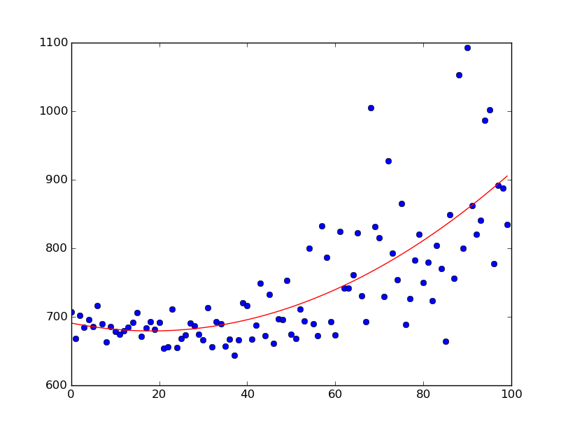
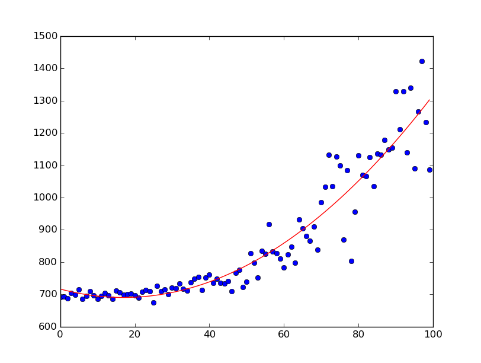

#2048 AI
Description
Actions:
States:
n*m (i.e. 16 for 4X4 grid)
Parameters:
- Network:
- Topology(#layers,neurons), @ Agent.h
- Learning Rate, @ Agent.h
- Weight Decay, @ Agent.h
- SARSA:
- Learning Rate(alpha), @ GameManager.h
- Discount Rate for future rewards(gamma) @ GameManager.h
- Random Selection Rate(epsilon) @ Agent.h
- Epoch
- Normalizing reward
- Normalization: @ GameManager.h
- r /= 2048.0
- r /= maxR
- r = 1 - 1/r
- Terminal State: @ GameManager.h
Progress
- [x] Board Complete
- [x] Game Logic Complete (for verification)
- [x] Q-Learning Agent Implementation -- faulty
- [x] Experience Replay
- [ ] ConvNet (if needed)
- [x] SARSA or Off-Policy Q-Learning? --> Hybrid(Initially random-exploration, going off to SARSA)
- [ ] SIGINT Handling to stop training & view result
- [x] Save/Load Trained Network
- [x] Debugging Premature Capping Problem
- [x] Better Determination of Terminal State
- [x] Replace Deterministic Max Q-Value Exploration with Probabilistic Exploration
- [x] Debug Neural Network : Back Propagation Doesn't seem to occur effectively.
- Neural Network seems to be doing fine, simply a numerical instability for small numbers.
- [x]
Fix Game Logic Bug : Jumping Across Blocks
- [x] Converting vectors into templates (since they are fixed-size)
- [x] Change Neural Net to Output Q-value for 4 actions as outputs
- (i.e. Q(S) --(net)--> {Q(S,a1),Q(S,a2)...})
- [x] Implement RMSProp to automatically adjust learning rate
- Decided to use AdaDelta instead
Notes
At this point, I will implement the Agent using a Deep Neural Network
with a simple multilayer construct.
If that doesn't suffice, I will implement the Agent with a Convolutional Network.
Given that the state space is anticipated to be enormous, it is impractical to use a Q-table.
I speculate that the Net doesn't learn very well because the changes in reward that occur due to a "better" move is very small (in the order of 1e-2); a better normalization scheme would be necessary. But how?
--
Results

This is the training progress during 30000 iterations of training;

And this is the training progress over 100000 games played.
As seen, the average score gets higher and higher by the number of training samples!
to put in context, a completely random agent achieves ~700 points per round.